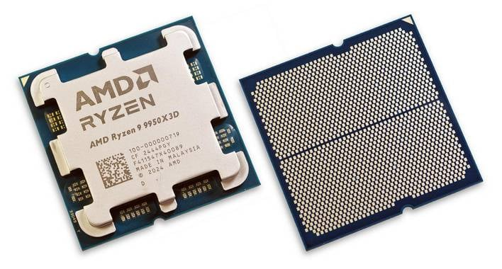
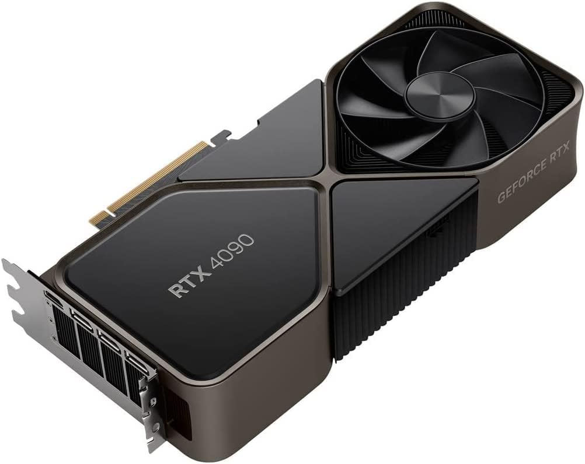
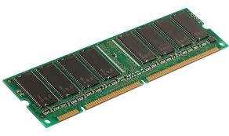
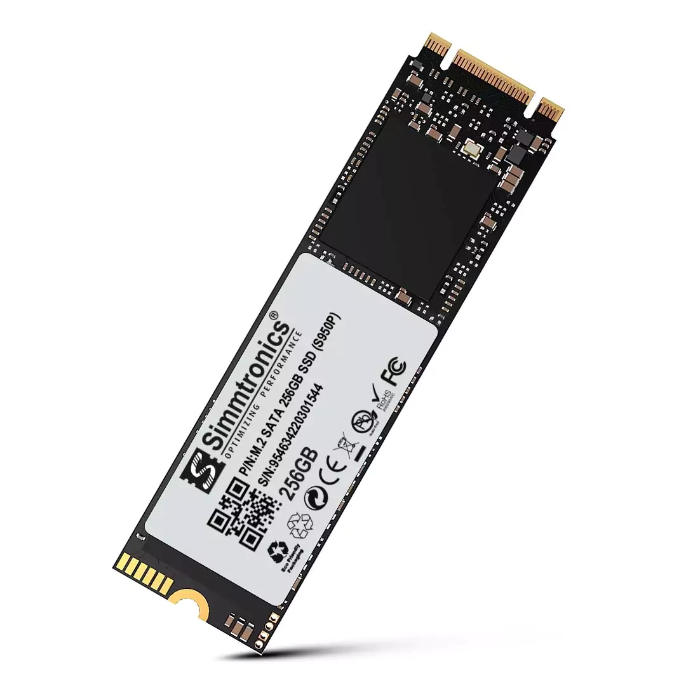

Five most important components of a computer :-
- Motherboard
- Central Processing Unit (CPU)
- Graphical Processing Unit (GPU)
- Random Access Memory (RAM)
- Storage device
Motherboard
A motherboard (sometimes alternatively known as the mainboard, system
board, baseboard, planar board or logic board). It's the main printed
circuit board (PCB) found in general purpose microcomputers and other
expandable systems. It holds and allows communication between many of the
crucial electronic components of a system, such as the central processing
unit (CPU) and memory, and provides connectors for other peripherals.
Unlike a backplane, a motherboard usually contains significant sub-systems
such as the central processor, the chipset's input/output and memory
controllers, interface connectors, and other components integrated for
general purpose use. Motherboard specifically refers to a PCB with
expansion capability and as the name suggests, this board is often
referred to as the "mother" of all components attached to it, which often
include peripherals, interface cards, and daughtercards: sound cards,
video cards, network cards, hard drives, or other forms of persistent
storage; TV tuner cards, cards providing extra USB or FireWire slots and a
variety of other custom components. Similarly, the term mainboard is
applied to devices with a single board and no additional expansions or
capability, such as controlling boards in laser printers, televisions,
washing machines and other embedded systems with limited expansion
abilities.

Central Processing Unit (CPU)
A central processing unit (CPU), also called a central processor, main
processor, or just processor, is the primary processor in a given
computer.Its electronic circuitry executes instructions of a computer
program, such as arithmetic, logic, controlling, and input/output (I/O)
operations.This role contrasts with that of external components, such as
main memory and I/O circuitry,and specialized coprocessors such as
graphics processing units (GPUs). The form, design, and implementation of
CPUs have changed over time, but their fundamental operation remains
almost unchanged.Principal components of a CPU include the
arithmetic–logic unit (ALU) that performs arithmetic and logic operations,
processor registers that supply operands to the ALU and store the results
of ALU operations, and a control unit that orchestrates the fetching (from
memory), decoding and execution (of instructions) by directing the
coordinated operations of the ALU, registers, and other components.
Modern CPUs devote a lot of semiconductor area to caches and
instruction-level parallelism to increase performance and to CPU modes to
support operating systems and virtualization. Most modern CPUs are
implemented on integrated circuit (IC) microprocessors, with one or more
CPUs on a single IC chip. Microprocessor chips with multiple CPUs are
called multi-core processors.The individual physical CPUs, called
processor cores, can also be multithreaded to support CPU-level
multithreading. An IC that contains a CPU may also contain memory,
peripheral interfaces, and other components of a computer;such integrated
devices are variously called microcontrollers or systems on a chip (SoC).

Graphical Processing Unit (GPU)
A graphics processing unit (GPU) is a specialized electronic circuit
designed for digital image processing and to accelerate computer graphics,
being present either as a discrete video card or embedded on motherboards,
mobile phones, personal computers, workstations, and game consoles. GPUs
were later found to be useful for non-graphic calculations involving
embarrassingly parallel problems due to their parallel structure. The
ability of GPUs to rapidly perform vast numbers of calculations has led to
their adoption in diverse fields including artificial intelligence (AI)
where they excel at handling data-intensive and computationally demanding
tasks. Other non-graphical uses include the training of neural networks
and cryptocurrency mining.

Random Access Memory (RAM)
Random-access memory (RAM; /ræm/) is a form of electronic computer memory
that can be read and changed in any order, typically used to store working
data and machine code.A random-access memory device allows data items to
be read or written in almost the same amount of time irrespective of the
physical location of data inside the memory, in contrast with other
direct-access data storage media (such as hard disks and magnetic tape),
where the time required to read and write data items varies significantly
depending on their physical locations on the recording medium, due to
mechanical limitations such as media rotation speeds and arm movement.
In today's technology, random-access memory takes the form of integrated
circuit (IC) chips with MOS (metal–oxide–semiconductor) memory cells. RAM
is normally associated with volatile types of memory where stored
information is lost if power is removed. The two main types of volatile
random-access semiconductor memory are static random-access memory (SRAM)
and dynamic random-access memory (DRAM). Non-volatile RAM has also been
developed and other types of non-volatile memories allow random access for
read operations, but either do not allow write operations or have other
kinds of limitations. These include most types of ROM and NOR flash
memory. The use of semiconductor RAM dates back to 1965 when IBM
introduced the monolithic (single-chip) 16-bit SP95 SRAM chip for their
System/360 Model 95 computer, and Toshiba used bipolar DRAM memory cells
for its 180-bit Toscal BC-1411 electronic calculator, both based on
bipolar transistors. While it offered higher speeds than magnetic-core
memory, bipolar DRAM could not compete with the lower price of the
then-dominant magnetic-core memory. In 1966, Dr. Robert Dennard invented
modern DRAM architecture in which there's a single MOS transistor per
capacitor.The first commercial DRAM IC chip, the 1K Intel 1103, was
introduced in October 1970. Synchronous dynamic random-access memory
(SDRAM) was reintroduced with the Samsung KM48SL2000 chip in 1992.

Storage device
A storage device is a piece of hardware that is used to store and retrieve
digital information. There are many different types of storage devices,
including hard drives, solid-state drives, USB drives, and memory cards.
Storage devices work by saving digital data to a physical medium, such as
a spinning disk or a chip. This data can then be retrieved and accessed by
a computer or other device when needed. Storage devices are an essential
component of any computer system, as they provide a place to store and
access the operating system, programs, and files that are used by the
system. They also play a key role in backing up and preserving important
data, as they provide a way to store and retrieve data even if the
computer itself is not operational. There are many different factors to
consider when selecting a storage device, including capacity, performance,
reliability, and cost. Different types of storage devices are suitable for
different needs, and the right storage device will depend on the specific
requirements of the system or application it is being used for.
